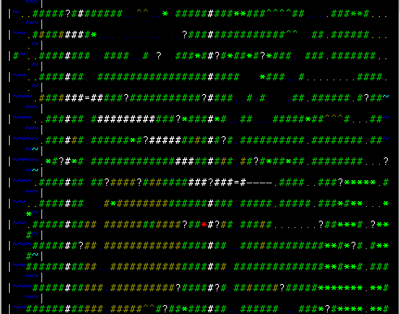
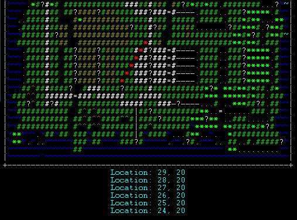

Fiendish's Super Amazing Bigmap Script Frequently Asked Questions
- I use zMUD version 4.3 on Windows 98SE Can you help?
Is it version 7.21 on Windows XP? No? Then cry to someone else. I probably can't fix problems that only occur in something I don't use.
- My screen is really small. Does that mean I can't use your super amazing script?
Not at all, but it might mean some changes and/or sacrifices. The first thing I recommend is to reduce the output font size for just the CONTINENTS window. If you pick an Opentype font (fonts with a  next to them in the font selector) like Lucida Console, then you can type whatever size number you want into the box and it will work. To change the font in that window, first select the window so that it's highlighted, then go to View->Preferences->Fonts and click on the button next to "Output Window Font". A smaller font won't be as easy to see, but maybe you should have thought about that when you went with the tiny monitor.
next to them in the font selector) like Lucida Console, then you can type whatever size number you want into the box and it will work. To change the font in that window, first select the window so that it's highlighted, then go to View->Preferences->Fonts and click on the button next to "Output Window Font". A smaller font won't be as easy to see, but maybe you should have thought about that when you went with the tiny monitor.
- The maps aren't displaying properly. I see something like this:
What's with all those blank lines?  Seeing output like this means that the continents window isn't wide enough. Since the window is too narrow, the lines are wrapping when they shouldn't. You need to stretch it out a bit more and then save your layout again. You will likely need to leave and re-enter the continent for the output to be fully corrected after making this change. In some cases you even need to close and re-open zMUD. There's nothing I can do about that.
- The maps aren't displaying properly. I see something like this:
What's with all that duplication?  Seeing output like this means that the continents window is not tall enough. Since zMUD doesn't have enough room to display all the lines like it wants, it gets confused about where to put the display updates. You need to make the window a little bit taller and then save your layout again. You will need to at the very least leave and re-enter the continent for the output to be corrected after making this change. In some cases you need to close and re-open zMUD as well. There's nothing I can do about that.
If you have other questions, feel free to send tells or notes.
- Fiendish